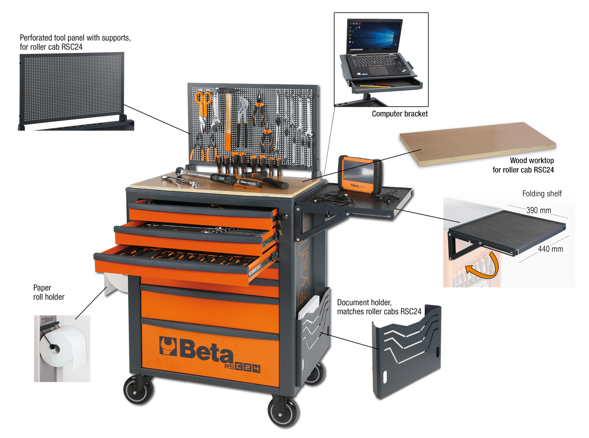
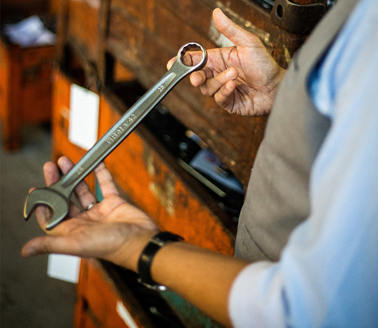
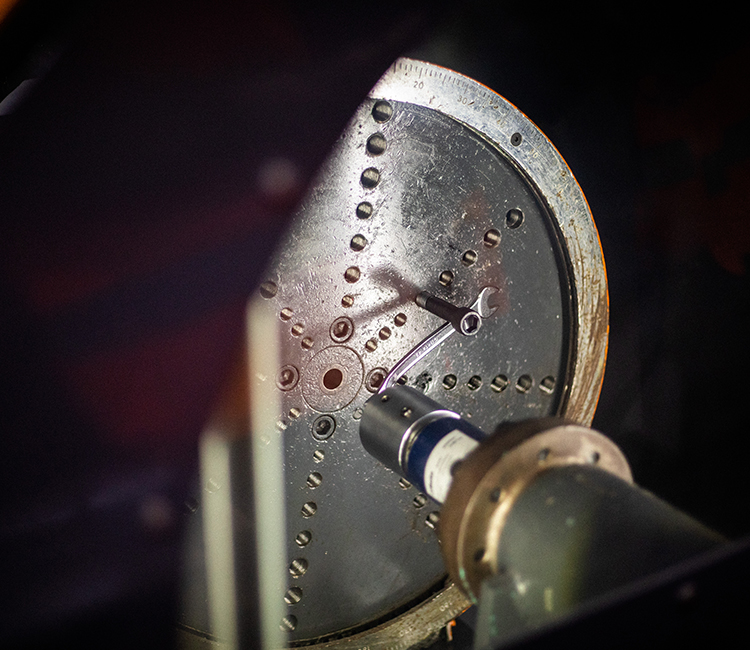

“ORANGE BAY”
WORKSHOP TRANSFORMATION
整備スペース1区画をBETAで可視的に改善。導入前後、探す時間、安全性、動線、スタッフ満足をコンテンツ化し、商品購入を「現場改善プロジェクト」に引き上げる。
430品を、選ばれる理由に。
100年を超える工具づくり、モータースポーツ、鮮烈なオレンジ。
その資産を「整備現場が変わる体験」へ翻訳する。
BETAの勝ち筋は、単品のスペック比較ではない。オレンジの収納・工具・5S・モータースポーツを一つの体験として見せ、現場の生産性と誇りを同時に上げることにある。
整備スペース1区画をBETAで可視的に改善。導入前後、探す時間、安全性、動線、スタッフ満足をコンテンツ化し、商品購入を「現場改善プロジェクト」に引き上げる。
HERO 30／CORE 120／DEPTH 280（提案値）。売る順番と語る順番を一致させる。
「BETA」単独を避け、Beta Tools｜ベータ工具｜Beta Utensiliを併記。二輪ブランドやソフトウェア用語との衝突を抑える。
在庫、商品マスター、導入支援、教育、将来の校正・修理体制までを“正規・安定供給の価値”として設計。
イタリア発。BETA商標は1939年登録。
手工具から工場設備・安全用品まで。
2025年11月取扱開始。世界展開品の約2.7%。
グループ従業員1,000名超。
※ 430 ÷ 16,000 = 約2.7%。製品数は各社公開情報に基づく概数で、時点・コード体系により変動します。
BETAは広大な総合工具ブランドでありながら、オレンジ、象徴的な工具、レーシングという記憶装置を持つ。これは国内導入初期に大きな優位になる。
売場で瞬時に識別できる色。収納・工具・現場全体をつなぐ“ワークショップの制服”。
1970年代からモータースポーツに参画。極限環境で使われる信頼を、二輪整備のリアリティへ。
性能だけでなく、所有・展示したくなる造形。無機質な工具売場に感情価値を持ち込める。
工具単品から収納、作業台、照明、車両整備、ウェアまで。現場を丸ごと提案できる。
“見せたくなる工具。
国内コミュニケーションの推奨翻訳
整えたくなる現場。
国内430品は“縮小版カタログ”にせず、誰のどんな仕事を変えるのかで編集する。商品単位ではなく、課題解決単位で売場・特集・営業資料を揃える。

OFFICIAL PRODUCT IMAGE ↗RSC24ローラーキャビネット、RSC55／RSC50／C45PROのモジュール家具。収納ではなく、安全・動線・見える化を売る主役商品。


象徴的なコンビネーションレンチ42、ソケット、ドライバー、プライヤー、トルクレンチ。スペックを“安全・疲労・狭所アクセス”に翻訳する。
車両・二輪・自転車整備用工具、ジャッキ、プーラー、計測。カスタムジャパンの顧客・車種・購買データと最も直接つながる領域。
電設、ステンレス、防爆、落下防止、溶接、空圧・電動、ワークウェア。二輪の先にある工場・設備保全市場への拡張余地。
公式説明では、ISO 1711要求の2倍を超える締付トルク、15°の角度、薄い形状、長めの全長を特徴としている。
数値 → 作業価値：壊れにくさ／手の保護／狭所性／少ない力で高トルク。
FACTORY GEARなどでは2021年から店頭取扱の発信があり、モールにも旧来・並行流通とみられる出品が存在する。喜一工具の課題は、初めて知らせることより、選定・供給・支援の信頼をつくること。
工具箱、ハンドツール、トルクレンチ、グッズなど430品を案内。
認知の土台。ただし品揃え、在庫、価格、商品情報の一貫性は不透明。
正規性、安定供給、導入支援、教育、将来のアフターサービス。
下記は初期仮説。実売・粗利・在庫回転・欠品・問い合わせを月次で見て、3か月ごとに昇降格する。
二輪車ブランド「Beta」、ソフトウェアのベータ版、各種固有名詞が混在。モールの“BETA件数”をブランド情報量やシェアに読み替えることはできない。
公開情報だけで国内実売シェアは算出できない。ここでは品揃え、ブランド力、情報量、流通モデルを代理指標として、BETAが取るべきポジションを整理する。
| ブランド／チャネル | 市場での強み | 国内情報量* | BETAの戦い方 |
|---|---|---|---|
| BETAイタリア／総合 | オレンジ、収納、モータースポーツ、16,000+コード | 立上げ期 | “工具＋現場変革”を一体化。430品の選定理由を可視化。 |
| KTC / nepros日本／総合 | 国内認知、幅広い流通、整備現場との距離 | 非常に多い | 国産安心と正面衝突せず、デザインとオレンジの空間体験で差別化。 |
| TONE日本／総合 | 価格競争力、ラインアップ、入手性 | 多い | 単品価格比較を避け、キャビネット・セット・導入支援で客単価を作る。 |
| Snap-on米国／プレミアム | 強いブランド、対面販売、所有価値 | 多い | 欧州デザイン＋ディストリビューターのEC・物流で“開かれたプレミアム”。 |
| Wera独／ねじ回し中心 | 製品発想、説明力、ファンコミュニティ | 多い | 喜一工具内では補完関係。Wera＝機能革新、BETA＝現場システム。 |
| STAHLWILLE独／トルク・産業 | 精度、校正、産業・航空領域の信頼 | 中〜多 | 補完関係。BETAは二輪・自動車と空間価値、同社は精密トルクを担う。 |
| ProTOOLsCJ／価格・実用 | 整備現場目線、価格、CJチャネルとの親和性 | 中 | 社内競合化を回避。日常・消耗＝ProTOOLs、誇り・空間＝BETA。 |
* 国内情報量は、公式日本語ページ、検索結果、主要EC・メディア・SNSでの可視性をデスク調査から相対評価した仮説。定量シェアではありません。
狙うべき空白：「ワークショップ全体 × デザイン／誇り」
BETAがブランドと商品を、喜一工具が専門流通・商品化を、カスタムジャパンが二輪市場への到達力を担う。役割を曖昧にしないことが最短ルート。
* TMS Baseの公式ページで確認できる認定対応はSTAHLWILLE／Wera。BETAの校正・修理を訴求する前に、メーカー認定・受付範囲・責任分界の確認が必要です。会員数はカスタムジャパン公開情報に基づく概数。
日常整備、消耗、特殊用途、コスト効率
見える工具、収納、現場変革、プレミアム
ねじ回し、精密トルク、プライヤーの専門性
核になるのは“Orange Bay”導入事例。現場改善の事実を、PR、メディア、SNS、BtoB、モール、自社通販、営業に合わせて再編集する。
ショップ1区画の
導入前 → 設計 → 導入 → 効果
取扱開始そのものではなく、導入店25拠点、5S改善結果、整備士育成、イベントなど“社会性のある節目”で配信。
MotoMegane、二輪・自動車・工具・工場系媒体へ。製品貸出だけでなく、整備士と現場をセットで提供。
15秒の引き出し整頓、工具42の狭所作業、オレンジ化のタイムラプス。保存したくなる現場TIPSへ。
車種ではなく“作業”と“店舗タイプ”で出し分け。クリック、見積、初回購入、リピートを会員IDで追う。
「イタリア工具史」「RSC24で5S」「工具42を検証」「430品の選び方」を連載。記事からセット見積へ直結。
商品名をBeta Tools／ベータ工具で統一。ブランドストア、A+、比較表、正規流通表記、価格・在庫を一元管理。
世界観の母艦。ブランドストーリーと、単品・セット・収納の買い方をつなぐ。指名検索の着地点にする。
デモキャビネットを持参し、15分の5S診断→推奨セット→分割導入。導入店は次の撮影・紹介拠点へ。
二輪販売店・カスタムショップ25拠点で、1ベイをBETA化。導入前後と作業者の声を継続発信。
KPI応募 → 診断 → 見積 → 導入 → 紹介象徴的なレンチ42を、狭所、力、握り、安全の4視点で整備士が検証。誇張せず公式仕様を現場語へ。
KPI動画完視聴 → 商品詳細 → セット購入430品を作業別に編集し、整備士が“最初の10本”を選ぶ。人を主語にして膨大な品揃えを理解可能に。
KPI特集閲覧 → 保存 → 初回購入 → 2品目広告を急ぐより、商品・価格・在庫・検索名・コンテンツ・営業話法を同じ設計図に載せる。公開値がない国内シェアは、受注実績から自社で作り始める。
公開情報を基にした2026年8月時点のデスク調査です。販売・在庫・顧客データと照合し、社内意思決定用の仮説を更新してください。
国内実売シェア、ブランド別売上、正規／並行流通の比率、SNS総投稿量は公開情報から検証できないため断定していません。Yahoo!ショッピング等の表示件数は検索ノイズを含み、シェア指標には使用していません。施策の数値目標は、カスタムジャパンと喜一工具の実績値を基準に別途設定してください。